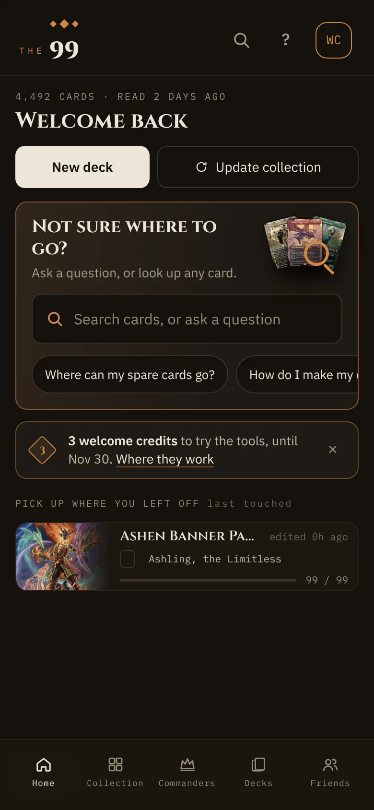

Finding the tools · R5
One complaint: "I have a bunch of cards I want to add to my other decks, but I don't know where to go." R5 makes Home's search easier to notice and sets down what pressing it does on a phone and a desktop. Everything else is as R4. Rendered from main 7563036 with shipped components. Figures and art are illustrative.
- Home's search gets its own panel: accent edge, a title, the field at 52px, a fan of the reader's cards under the search's lens (call 6).
- What pressing it does: in place on desktop, the full-screen sheet on a phone (call 7, Q9).
- Open from R4: Q8 (phone rows, strip or glyph).
6 · Home's search, easier to notice (R5)
- Its own panel, first under the page head: the welcome strip's accent edge, a wash of the accent fading across, a display title Not sure where to go? and a line Ask a question, or look up any card.
- The field at 52px on the page's own --bg, so it reads as the place to type: the glyph in the accent, the placeholder, ⌘K from md.
- Personality, not flash: a small fan of three of the reader's own cards (the three most recently added) with the search's lens over them, the card search empty state's graphic in their art. Right of the field from md; beside the title on a phone.
- The starters under the field, on the page's --bg so they read as presses. No motion, no badge.
7 · What pressing it does (R5)
- Desktop: the Home field IS the search field. Typing there opens the results in place, the same dropdown the rail's search draws (same groups, same keys, same foot), anchored under the Home field and its width. The rail's search does not open; the page is not covered. Esc or a press outside closes it and keeps the text.
- Phone: a press on the field opens the same full-screen search sheet the header's magnifier opens, focused, with the keyboard up (A0 on this board). A starter opens it with the question typed (A1). The phone never draws a dropdown under a field: the keyboard would cover it.
- One search underneath: one query, one result list, one recent-cards memory. Typing on Home and then pressing ⌘K shows the same query.

Home, phone
The panel, first under the page head.

Pressed, phone
The full-screen sheet; a starter types its question.
Q9 · Desktop: results in place under Home's field, or the rail's search?
Recommended: A. The answer appears where the reader is looking; B makes the eye jump to the left edge and leaves the Home field a fake.
Q8 · Phone rows: a Find a deck strip under each row, or the glyph beside it?
Recommended: A. The name is what a reader scans by, and the word matches the tile's button, so phone and desktop read the same.
- Ask in the card search: starters, Tools for this, never a dead end; one field, card names first.
- Find a deck: the tile button, the row strip (phone) and button (desktop), the call-out.
- Tuning and Welcome as R1, approved.